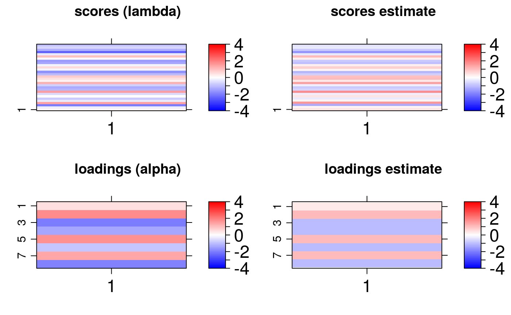
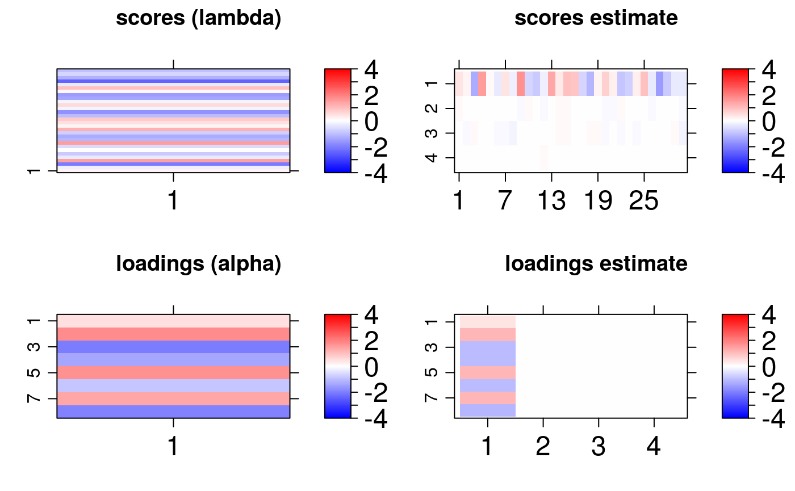
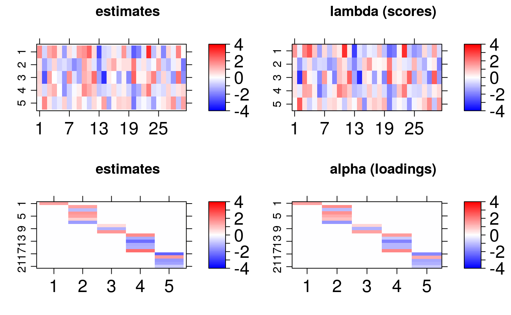
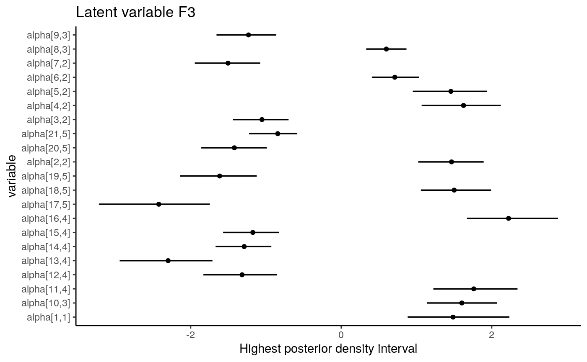
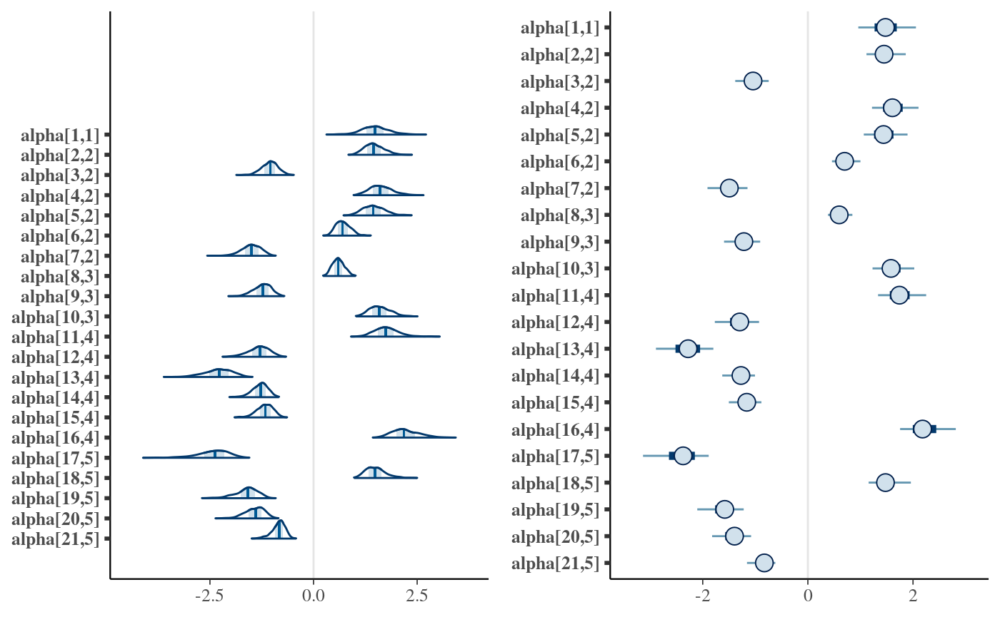

vignettes/bsem.Rmd
bsem.RmdThis vignette describes the first instructions on how to fit the particular cases of structural equation models (SEMs) using the bsem package. Examples include confirmatory factor analysis (CFA) and confirmatory SEM. The flexible full SEM model (outer model + inner model), provided here, enables the evaluation of user-defined constructs (latent variables) along with the analysis of established relationships among the latent scores (estimates). In addition to this vignette, you can have access to Bayesian factor analysis instructions in Mayrink and Lucas (2013) and Mayrink and Lucas (2015) .
Consider:
the outer model as: \[\boldsymbol{X_{p\times n}} = \boldsymbol{\alpha}_{p\times k}\boldsymbol{\lambda}_{k\times n} +\boldsymbol{\varepsilon}_{p\times n}\] where \(\boldsymbol{X}\) is the standardized data matrix with the variables in the rows and observations in columns, \(\boldsymbol{\alpha}_{p\times j}\) is the column vector of constant effects (loadings) for the \(j^{th}\) latent variable and \(\boldsymbol{\lambda}_{j\times n}\) is the row vector of scores for the \(j^{th}\) unobserved variable\(,~j =1,\dots,k\). Normality is assumed for the errors as \(\boldsymbol{\varepsilon}_{p\times i}\sim N(\boldsymbol{0}, \boldsymbol{\Sigma}_{p\times p}), ~i = 1,\dots, n\), where the covariance is diagonal \(\boldsymbol{\Sigma} = (\sigma_1^2, \sigma_2^2, \dots,\sigma_p^2) \boldsymbol{I_p}\).
the inner model as: \[\boldsymbol{\lambda}_{j\times n} = \boldsymbol{\beta}^{\top} {\lambda^{(-j)}} + \nu~\] where \(\boldsymbol{\beta}\) is a column vector of constant coefficients, \({\lambda^{(-j)}}_{ k-1\times n}\) is the matrix of scores excluding the \(j^{th}\) row scores and the error assumes \(\nu\sim N(0,1)\).
The guidelines in this document were divided into 5 subsequent sections: installation, description, usage, graphical analysis, and remarks.
The bsem package imports Stan software specific routines to support internal calculations. The rstan package interface enables the use of NUTS algorithm ( Hoffman and Gelman, 2014) to explore the posterior distribution efficiently in R. The development version of bsem can be found in github.com/rvpanaro/bsem.
For github version:
library("devtools") devtools::install_github("rvpanaro/bsem")
For CRAN version:
library("devtools") install.packages("bsem")
During the installation, other dependencies might be required, such as lattice, viridis, coda, DiagrammeR, visNetwork and, obviously, rstan. Other packages are also suggested such as ggplot2, bayesplot and tidybayes. The default arguments used to build the bsem::sem routine will be introduced in the next sections this function is the main function of this package, as it allows the Bayesian analysis for SEM and its particular cases.
The data and additional commands are passed through the bsem::sem function as:
data: a mandatory ‘matrix’ object where the columns are variables and the rows are observationspaths: a list of characters referring to the scores relationship (inner model); list elements must be named according to blocks
blocks: a list indicating the variables that might express relationship to the latent variables assigned (outer model); latent variables must be namedsignals: a list indicating the variables that might express relation to the latent variable assigned (outer model)row_names: identifier for each set of variables (observation = row); optionalprior_specs: prior specification for the error variance sigma2 and regression coefficients beta
cores: number of core threads to be used; arbitrary, however the quantity of cores in use does not exceed the number of chainspars: character vector with the names of the parameters to be considered after fitting; “alpha” refers to the loadings, “lambda” to the scores, “sigma2” to the errors, “Xna” to missing data, “log_lik” to the log likelihood summationiter: number of MCMC iterationschains: number of chains considering distinct initial valuesscaled: logical; whether to scale() the data set passed to the data argument...: further arguments passed to rstan::sampling such as warmup, control
bsem::sem(data, paths, blocks, signals, row_names = rownames(data), prior_specs = list(coef = c("normal(0,1)"), error_var = c("inv_gamma(2.1, 1.1)")), cores = parallel::detectCores(), pars = c("alpha", "lambda", "sigma2", "Xna"), iter = 2000, chains = 4, scaled = TRUE, ...)
The above function automatically selects the appropriate routine according to the specified arguments, examples are given in the next section. One can reproduce the examples bellow by copying and pasting the following code to the R console. For these examples, simulated artificial data was created so that we can verify that the estimates are close enough to the true parameter values used to generate the data.
This section describes how the package can be used to estimate artificial parameters. This is a former analysis in light of other studies based on replication such as Monte Carlo simulation study methods.
This example is based on the uni-factor model ( Reckase, 1979).
Nv <- 8; Ne <- 30; K <- 1
B is necessary to represent each block that indicates which manifest variables are related to each construct:B <- list(F1 = 1:Nv); B
## $F1
## [1] 1 2 3 4 5 6 7 8sigma2 <- runif(Nv, 0.1, 0.9) # errors matrix errors <- array(0, c(Nv, Ne)) for(i in 1:Nv){errors[i,] <- rnorm(Ne, 0, sqrt(sigma2[i]))}
sample function.lambda <- array(rnorm(K*Ne), c(K, Ne)) # Factor scores matrix # Factor loadings matrix alpha <- array(0, c(Nv, K)) for(k in 1:K){alpha[B[[k]],k] = runif(lengths(B)[k], 0.5, 2) * sample(c(-1,1), lengths(B)[k], replace = T)} signals <- list(F1 = array(sign(alpha)))
X = t(alpha %*% lambda + errors)
Given that the data set was generated synthetically, we can run bsem::sem to check if they retrieve the true values of the parameters used in the generation of the database. We simply use the data argument and the blocks argument to specify the one-factor model:
unifact <- bsem::sem(X, blocks = B, signals = signals, chains = 1)
Descriptive statistics for the posterior factor loadings are showed in the R console inspired on the rstan fashion (based on rstan::monitor). In general, the posterior mean is the Bayesian estimator first choice:
unifact##
##
## ---
## bsem model: factorial
## latent variables (outter model): 1
##
##
## outer model loadings:
##
## F1
## mean se_mean sd 2.5% 97.5% n_eff Rhat
## var1 0.3489 0.0088 0.2052 -0.0613 0.7421 548 0.9997
## var2 1.0617 0.0162 0.1738 0.7663 1.4275 118 1.0040
## var3 -1.0262 0.0167 0.1740 -1.3848 -0.7176 109 1.0006
## var4 -1.0166 0.0169 0.1835 -1.4122 -0.7082 118 1.0006
## var5 1.0855 0.0162 0.1724 0.7983 1.4599 115 1.0028
## var6 -1.0139 0.0146 0.1792 -1.4057 -0.7021 150 1.0017
## var7 1.0623 0.0159 0.1790 0.7523 1.4332 125 1.0015
## var8 -1.0609 0.0157 0.1733 -1.4429 -0.7538 123 1.0035
##
## ---The structural model can be easily viewed with the plotting routine bsem::plot:
plot(unifact)
Moreover, we can compare the posterior factor loadings and the scores with the true values using the bsem::arrayplot function. For example:
gridExtra::grid.arrange(bsem::arrayplot(lambda, main = "scores (lambda)", -4,4), bsem::arrayplot(unifact$mean_scores, main = "scores estimate", -4,4), bsem::arrayplot(alpha, main = "loadings (alpha)", -4,4), bsem::arrayplot(unifact$mean_loadings, main = "loadings estimate", -4,4), layout_matrix = matrix(c(1,1,3,3,2,2,4,4), ncol= 2))

The bsem::arrayplot graphs show that the loadings and scores pattern were captured by the model. In order to intensify the contrast between the estimates it may be necessary to increase the number of iterations or the warmup period since this is a model with many parameters. Remember each chains runs in a separate thread, thus, it is recommended specifying a number of cores at least equal to the number of chains. Indeed, from our experience, an increase in the number of iterations raises the runtime but considerably improves the interval and point estimates.
The data generated for the uni-factor example, is also used here. This example refers to an application of the bi-factor model ( Jennrich and Bentler, 2011; Gibbons and Hedeker, 1992). The ideia behind this application is to show how flexible is SEM. From our generated data we have that variables should manifest only the latent variable F1.
B represents each block, indicating which manifest variables are related to each construct. B and, consequently, signals are modified for a bi-factor analysis.B$G1 <- 1:3 B$G2 <- 4:6 B$G3 <- 7:8 B
## $F1
## [1] 1 2 3 4 5 6 7 8
##
## $G1
## [1] 1 2 3
##
## $G2
## [1] 4 5 6
##
## $G3
## [1] 7 8## $F1
## [1] 1 1 -1 -1 1 -1 1 -1
##
## $G1
## [1] 1 1 1
##
## $G2
## [1] 1 1 1
##
## $G3
## [1] 1 1Simply use the data argument and the blocks argument to specify the bi-factor model above:
bifact <- bsem::sem(X, blocks = B, signals = signals, chains = 1)
Descriptive statistics for the posterior factor loadings are showed in the result in rstan fashion:
The structural model is displayed using bsem::plot:
plot(bifact, layout = 'nicely')
Compare the posterior factor loadings and the scores with the true values using the bsem::arrayplot function:
gridExtra::grid.arrange(bsem::arrayplot(lambda, main = "scores (lambda)", -4,4), bsem::arrayplot(bifact$mean_scores, main = "scores estimate", -4,4), bsem::arrayplot(alpha, main = "loadings (alpha)", -4,4), bsem::arrayplot(bifact$mean_loadings, main = "loadings estimate", -4,4), layout_matrix = matrix(c(1,1,3,3,2,2,4,4), ncol= 2))

The bsem::arrayplot graphs show that the loadings and scores pattern were captured by the model. An increase in the number of iterations or the warmup period may improve the point estimates. As expected, the outcome estimates evidance a one-factor model, which means other latent variables would not be helpful in explaining this data (as we know from the generation). This conclusion can also be achieved looking at the diagram.`
In the last example, not all variables were used in the formulation of predefined constructs. In many applications, with the help of technical knowledge, it is possible to establish relationships between all variables in the data set and the constructs under study. This case characterizes the confirmatory factor analisys (CFA). Besides that, we can also verify linear relationships between latent variables. The blocks can be passed as named lists and the database with colnames and rownames. For example, for set2 we have:
It is worth mentioning that the paths are named with block names. There are two ways to define the model: 1) the blocks and the data set are not named previously (internally named); 2) named blocks and named paths are passed to their respective arguments; otherwise should generate an error.
The data argument, the blocks and the paths arguments should specify ta full uncorrelated SEM model. The blocks represent the manifest variables that form each construct while the paths represent the linear relationships between the latent variables:
sem <- bsem::sem(data = set2$set, blocks = set2$blocks, paths = set2$paths, signals = set2$signals, chains =1, scaled = F)
plot(sem)
gridExtra::grid.arrange(bsem::arrayplot(sem$mean_scores, main = 'estimates', mini = -4, maxi = 4), bsem::arrayplot(set2$real$lambda, main = 'lambda (scores)', mini = -4, maxi = 4), bsem::arrayplot(sem$mean_loadings, main = 'estimates', mini = -4, maxi = 4), bsem::arrayplot(set2$real$alpha, main = 'alpha (loadings)', mini = -4, maxi = 4), layout_matrix = matrix(c(1,1,3,3,2,2,4,4), ncol = 2))

Again, we found that the estimates pattern are tighly close to the true values of the parameters. This examples highlights a complete confirmatory SEM analysis. The regression coefficients estimates are:
| beta[1] | 1.276 | 1 |
| beta[2] | -0.5618 | -0.5 |
| beta[3] | 0.4374 | -1.5 |
| beta[4] | -1.163 | 0.5 |
All content exposed in the examples can be retrived by the user folowing the comand lines above. Although, keep in mind that we must check posterior statistics in order to assess whether the estimates are good to describe the proposed CFA or SEM model.
Two types of intervals can be obtained:
.$credint. We have computed HPD intervals fo the factor loadings (alpha), scores (lambda), and regression coefficients (beta).names(sem$credint)
## [1] "loadings" "scores" "var" "coef"ggplot2 and tidybayes:dt data.frame object has the mean loadings and the HPD interval lower and upper limits (ll and lu):dt <- data.frame(li = sem$credint$loadings[,1], lu = sem$credint$loadings[,2], m = c(sem$mean_loadings))
lnames and snames are used to find the loadings of the conceptual model (those that might not equal zero).find help us finding these values:find <- paste0("alpha[", which(lnames %in% unlist(sem$blocks)), ",", rep(1:length(sem$blocks), lengths(sem$blocks)), "]") dt <- dt[find,]
ggplot(aes(y = find, x = m, xmin = li, xmax = lu), data = dt) + geom_pointintervalh() + theme_classic() + labs(title = paste("Latent variable", colnames(sem$mean_loadings)[3]), x = "Highest posterior density interval", y = "variable")

In the SEM example above, all intervals regarding the loading estimates from the conceptual relationships do not include zero.
Alternatively, it is possible to access equal tails credibility intevals using the bayesplot package:
library("bayesplot")
find help us finding the loading values that have been previously determined to estimate the latent scores:find <- paste0("alpha[", which(lnames %in% unlist(sem$blocks)), ",", rep(1:length(sem$blocks), lengths(sem$blocks)), "]") dt <- dt[find,]
gridExtra::grid.arrange(mcmc_areas(sem$posterior$alpha[,,find]), mcmc_intervals(sem$posterior$alpha[,,find]), layout_matrix = matrix(c(1,1,2,2), ncol = 2))

In addition to the possibilities for intervals, other mcmc_. type graphs are highly recommended, several options include histograms, violin plots, pair plots and others.
bsem::summary routine prints descriptive statistics to the R console:summary(sem)
##
##
## ---
## bsem model: sem
## latent variables (outter model): 5
## regressions (inner model): 3
##
##
## outer model loadings:
##
## F1
## mean se_mean sd 2.5% 97.5% n_eff Rhat
## 1.4859 0.0370 0.3387 0.8140 2.2152 84.0000 1.0110
##
## F2
## mean se_mean sd 2.5% 97.5% n_eff Rhat
## V2 1.4656 0.0178 0.2320 1.0584 1.9621 174 1.007
## V3 -1.0529 0.0128 0.1933 -1.4384 -0.6853 229 1.003
## V4 1.6252 0.0188 0.2696 1.1428 2.2105 205 1.003
## V5 1.4573 0.0176 0.2638 0.9874 2.0058 223 1.003
## V6 0.7119 0.0084 0.1729 0.4188 1.0659 428 1.001
## V7 -1.5045 0.0177 0.2343 -1.9972 -1.0935 175 1.003
##
## F3
## mean se_mean sd 2.5% 97.5% n_eff Rhat
## V8 0.6001 0.0073 0.1420 0.3448 0.8888 376 1.004
## V9 -1.2320 0.0141 0.2088 -1.6586 -0.8659 220 1.004
## V10 1.6016 0.0191 0.2497 1.1684 2.1347 171 1.005
##
## F4
## mean se_mean sd 2.5% 97.5% n_eff Rhat
## V11 1.761 0.0232 0.2929 1.254 2.3943 172 1.017
## V12 -1.317 0.0174 0.2537 -1.864 -0.8837 231 1.017
## V13 -2.300 0.0289 0.3340 -2.999 -1.7407 143 1.020
## V14 -1.290 0.0160 0.1925 -1.720 -0.9632 152 1.017
## V15 -1.174 0.0162 0.1966 -1.595 -0.8314 163 1.023
## V16 2.224 0.0283 0.3233 1.681 2.9038 141 1.023
##
## F5
## mean se_mean sd 2.5% 97.5% n_eff Rhat
## V17 -2.4238 0.0375 0.3829 -3.330 -1.8132 104 1.005
## V18 1.5013 0.0233 0.2476 1.106 2.0761 113 1.008
## V19 -1.6153 0.0244 0.2757 -2.243 -1.1716 128 1.002
## V20 -1.4198 0.0221 0.2370 -1.929 -1.0265 115 1.005
## V21 -0.8431 0.0143 0.1618 -1.224 -0.5833 129 1.004
##
## ---
##
## variances:
## mean se_mean sd 2.5% 97.5% n_eff Rhat
## var[1] 0.7508 0.0663 0.6182 0.1843 2.2981 89 1.0047
## var[2] 0.4551 0.0061 0.1414 0.2454 0.7726 531 0.9991
## var[3] 0.4753 0.0053 0.1368 0.2758 0.8218 658 0.9998
## var[4] 0.7801 0.0096 0.2300 0.4269 1.3211 590 1.0054
## var[5] 0.8952 0.0104 0.2446 0.5248 1.4531 565 1.0012
## var[6] 0.5214 0.0053 0.1427 0.3040 0.8554 716 1.0014
## var[7] 0.2658 0.0044 0.0951 0.1258 0.5030 476 1.0007
## var[8] 0.6940 0.0069 0.1817 0.4176 1.1141 682 0.9994
## var[9] 0.5445 0.0088 0.1964 0.2410 0.9796 501 1.0004
## var[10] 0.4469 0.0129 0.2161 0.1692 1.0144 280 1.0009
## var[11] 0.7749 0.0094 0.2268 0.4434 1.3395 571 1.0000
## var[12] 0.8511 0.0135 0.2610 0.5050 1.4714 371 1.0011
## var[13] 0.4780 0.0063 0.1547 0.2478 0.8308 601 0.9992
## var[14] 0.1943 0.0024 0.0565 0.1124 0.3273 547 1.0011
## var[15] 0.3414 0.0042 0.1019 0.1954 0.5825 606 1.0030
## var[16] 0.5227 0.0059 0.1583 0.2596 0.9215 723 0.9992
## var[17] 0.7361 0.0130 0.2630 0.3583 1.4447 419 1.0061
## var[18] 0.4424 0.0058 0.1367 0.2400 0.7842 560 1.0026
## var[19] 0.5863 0.0099 0.1777 0.3204 1.0309 336 1.0034
## var[20] 0.3275 0.0039 0.0993 0.1725 0.5634 659 1.0002
## var[21] 0.2586 0.0032 0.0743 0.1536 0.4361 545 1.0007
##
## ---
##
## inner model regression coefficients:
##
## F1
## mean se_mean sd 2.5% 97.5% n_eff Rhat
## 1.2758 0.0588 0.4235 0.6032 2.2497 57.0000 1.0208
##
## F2
## mean se_mean sd 2.5% 97.5% n_eff Rhat
## -0.5618 0.0120 0.2270 -1.0706 -0.1668 364.0000 1.0023
##
## F3
## mean se_mean sd 2.5% 97.5% n_eff Rhat
## F5 0.4374 0.0095 0.2243 0.0084 0.8673 570 1.0033
## F4 -1.1631 0.0201 0.2974 -1.8052 -0.6173 220 0.9995
##
##
##
## Head Rhat:
## alpha[18,2] alpha[15,4] alpha[16,4] lambda[4,20] lambda[4,23] beta[1]
## 1.031 1.023 1.023 1.022 1.021 1.021
##
## Tail Rhat:
## alpha[13,3] alpha[4,3] sigma2[2] lambda[2,21] lambda[1,29] alpha[11,1]
## 0.9991 0.9991 0.9991 0.9991 0.9991 0.9990
##
## median PVTE: 80.15
## SQT: 1566 SQE: 1885 AFR2: 16.92%
##
## ---The effective sample size n_eff gives an estimate of the independent draws from the posterior distribution, and Rhat referred to as the potential scale reduction statistic, is one of the useful ways to monitor whether a chain has converged to the equilibrium distribution. This statistic measures the ratio between the average variation of the samples within each chain and the variation of the combined samples in the chains; if the chains have not converged to a common region, this statistic will be greater than one.
Stan output object using the .$stanfit command:class(sem$stanfit)
## [1] "stanfit"
## attr(,"package")
## [1] "rstan"In particular, one can have access to built-in plot functions and even to a shiny app (details in https://shiny.rstudio.com/ developed by Stan developer’s team
For the shiny app run:
shinystan::launch_shinystan(sem$stanfit)
A crucial difference in obtaining the same statistics printed by the bsem::summary function is the use of the signals argument in the bsem::sem routine. The signal specification, (-1 or 1) for each of the factor loadings, forces the initial values of each chain to have the same direction and, naturally, these chains converge to nearby regions. Otherwise, the signal of some factor loading chain may be opposite as a consequece of random initialization. In order to circumveit this issue, the package automatically transform posterior chains using simple for loops and if statements to recalculate the descriptives using rstan::monitor.
.$ :head(sem$stats, 2)
## mean se_mean sd 2.5% 25%
## alpha[1,1] 1.4858510226 0.0370262589 0.338650475 0.81404849 1.269334855
## alpha[2,1] -0.0004997945 0.0003192344 0.009873391 -0.02006834 -0.007483517
## 50% 75% 97.5% n_eff Rhat valid
## alpha[1,1] 1.4761719218 1.690830020 2.21515053 84 1.0110205 1
## alpha[2,1] -0.0003960244 0.006217186 0.01977989 947 0.9994626 1
## Q5 Q50 Q95 MCSE_Q2.5 MCSE_Q25
## alpha[1,1] 0.95946739 1.4761719218 2.05542866 0.1309693240 0.0420073786
## alpha[2,1] -0.01676949 -0.0003960244 0.01573315 0.0008653601 0.0006297068
## MCSE_Q50 MCSE_Q75 MCSE_Q97.5 MCSE_SD Bulk_ESS
## alpha[1,1] 0.0333853586 0.0370113503 0.0531854185 0.0262733497 84
## alpha[2,1] 0.0003104586 0.0003170929 0.0009815365 0.0003265722 965
## Tail_ESS
## alpha[1,1] 64
## alpha[2,1] 596The next code chunk shows the code for trace and density plotting using the bayesplot package. The graphs show unimodal posterior densities and well behaved chains with good mixing, this is a good behavior indication.
The content of this vignette introduces the bsem package. Here, the analysis was dedicated to illustrating, in practice, the commands implemented in the proposed package spsurv. We still have work to do to improve and update this tool, however, the present version is ready for the main statistical study in the field of survival analysis. The routines presented in this dissertation are unprecedented. Many efforts with regard to the instruction the routines documentation were carried out concurrently with the spsurv package implementation. This document is part of the content submitted to CRAN. The package is also in public use and is available at the github development platform, the link is: https://github.com/rvpanaro/spsurv.